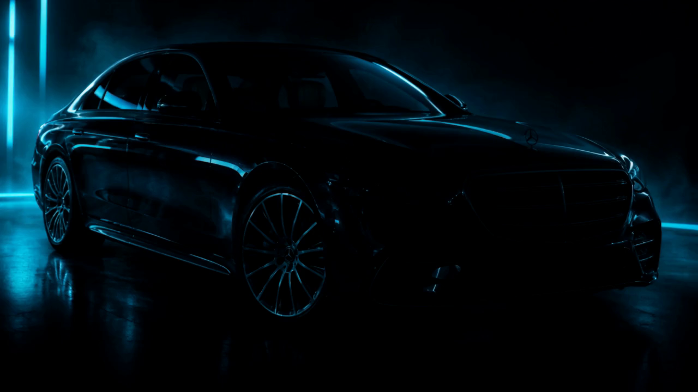
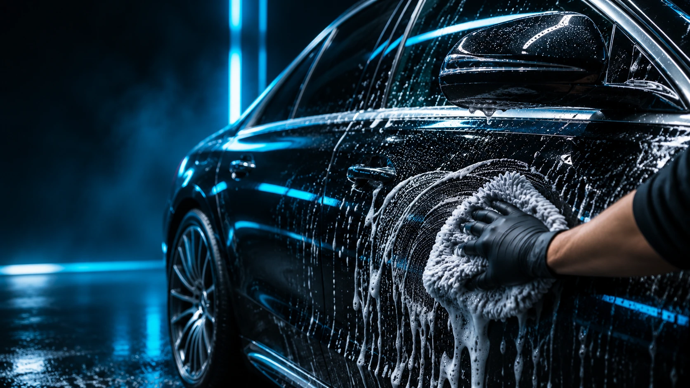
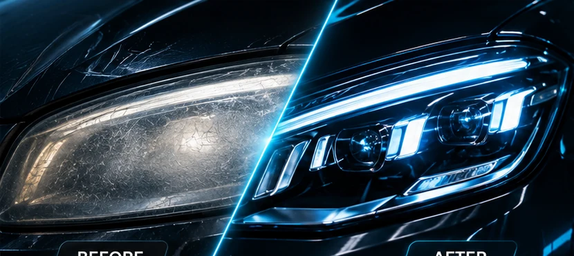

01 / THE FIRST IMPRESSION
Presence
in every line.
A different way to see the details.
02 / LOOK CLOSER
Every surface
has a story.
Light reveals what the eye might miss.
03 / THE REFINEMENT
The difference
is in the finish.
Precision is visible in the smallest details.
A MORE CONSIDERED FINISH
It’s not just
what you see.
It’s how you look.
Greg’s Details is dedicated to high-end car detailing. From the first impression to the finishing touches, our focus is on the surfaces, materials and details that shape the way a vehicle looks and feels.
Discover the details ↘THE FIRST IMPRESSION
Light finds
everything.
The character of a car lives in its silhouette, reflections and paintwork. Exterior detailing is about giving those elements the attention they deserve.
SURFACE / REFLECTION / FORM
EXTERIOR WASH / CONCEPT VISUALTHE SPACE WITHIN
Considered
from the
inside out.

Detailing extends beyond the exterior. The cabin deserves the same thoughtful attention: the surfaces you see, the materials you touch, and the spaces you experience every day.
INTERIOR / MATERIAL / CARETHE LASTING IMPRESSION
The art
of noticing
more.
Subtle reflections. Defined contours. The quiet impact of a carefully considered finish. The smallest details often leave the strongest impression.
CLARITY IN THE DETAILS
See the
difference.
Headlight restoration is one of the details that can change the appearance of a vehicle’s front end. Explore the difference between a hazy lens and a clear finish.
LENS / CLARITY / FINISH